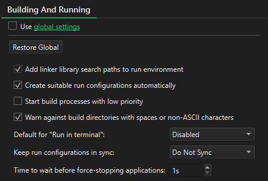

Specify build and run settings
To override the build and run settings for the current project:
- Go to Projects > Project Settings > Building and Running.

- Clear Use global settings.
- Specify build and run settings for the project.
Your choices override some of the values you set in Preferences > Build & Run > General.
| Setting | Value |
|---|---|
| Add linker library search paths to run environment | Ensures that library paths used during linking are also available when running the application. |
| Create suitable run configurations automatically | Automatically generates run configurations based on the current build settings. |
| Start build processes with low priority | Launches build processes with a lower priority. |
| Warn against build directories with spaces or non-ASCII characters | Displays warnings if the build directory contains spaces or non-standard characters that may cause issues. |
| Default for "Run in terminal" | Specifies whether applications should run in a terminal by default. |
| Keep run configurations in sync | Specifies whether adding, removing, or editing a run configuration in one build configuration should update other build configurations accordingly. |
| Time to wait before force-stopping applications | Specifies the number of seconds to wait between a soft kill and a hard kill of a running application. |
Select Restore Global to revert to the global settings.
See also Build and Run.